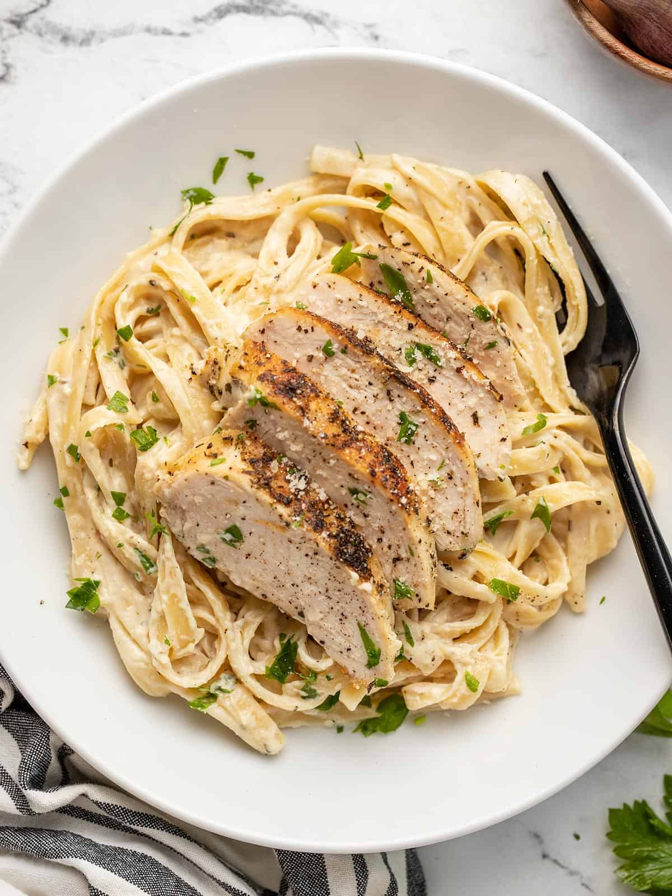

Chicken Alfredo

Description
This easy chicken alfredo pasta recipe is rich, creamy and the perfect antidote to hunger pangs.
You're just a few steps away from cheesy pasta perfection.
Ingredients - Serves 2 as a Main
- 1 tbsp olive Oil
- 4 chicken thighs, cut in half
- 300g fettuccine
- 1 tbsp butter
- 200ml double cream
- 1 tsp nutmeg, ground
- 100g parmesan
- 10g parsley, freshly chopped
Method
- Heat the olive oil in a non-stick frying pan over a medium high heat.
Add the chicken thighs and fry for around 10 mins, turning half way, until they are golden brown and cooked through.
Set aside to cool a little, then use two forks to shred.
- Bring a pan of salted water to the boil and add the pasta, cook for 1 minute less that package instructions.
Whilst the pasta is cooking, add the butter to the frying pan over a medium heat, scraping the bottom a little to get any of the browned bits.
Tip in the cream along with the nutmeg and bring to a simmer.
Add the chicken back to the pan.
- Once the pasta is cooked, use tongs to transfer the pasta straight from the water into the frying pan with the cream mixture.
Sprinkle most of the parmesan over and use the tongs to toss it all together, adding a splash of the pasta water if it looks a little stiff.
Season well, then tip into bowls. Top with the remaining parmesan, a scattering of parsley, and black pepper.